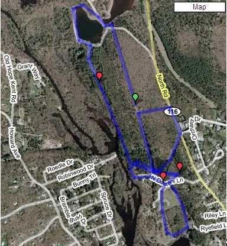

Do it to me one more time Hash
(With No Doctors)
Run #1047, April 24, 2006
Hare: Dry Foot Fairy
Location: Scituate
Weather: 50’s, Cloudy with sprinkles of rain
Present: Dr WHO, Basket Boom Boom, Tinker, Async, Cum Under, Seamus.
The Run:
The hare set a trail at “No Doctors Lane” in Scituate. Wishful thinking! Hash attendance may be at an all-time low. WHO do you not want to come? And, hare creativity seems to be approaching an all-time high. This is not a good thing. [Hare creativity = a trail that is exceptional in qualities that annoy and irritate everyone in the pack. This hash was a prime example of this.] The hare conceived a trail that could be described as redundant, repetitive, ridiculous, or repugnant. (And several other words beginning with the letter “R”, as well! Like rat-vomit!) There was no bushwhacking. There was no shiggy. There was trespassing on reservoir property. And the trail could best be described as an A to A to B to A to A to B to C. If you get my drift. But let the following narrative speak for itself!
Trail began from No(rth) Doctor’s Lane in Scituate. The “No Doctors” demand by the hare worked only partially. Oozing didn’t show up. And Cum Under was late. WHO went first to So(uth) Doctor’s Lane, just to show the hare. It was a small group then, that set out on trail west from the parking area. It was a nice path. Smooth, and well-used. The kind of path you’d like to spend some time on. Async led and at the first check, turned north on a powerline. WHO continued straight followed by Basket. Async called on, and they turned back joining Tinker turning uphill on the powerlines. The hare lagged behind, and Basket and WHO briefly considered turning back to shadow him. Stupidly they continued north.
A second check was missed by Async who continued straight to some holding ponds for the water purification plant. A good place to get arrested, by the way. WHO turned right again, east on true trail. He came out on North Road (116) and guessed right, right again. But another check sent him east into a small neighborhood, while Tinker and Async turned right, right again on to a second powerline heading southwest. WHO and Basket followed. Trail led to a path. It was a nice path. Smooth and well-used. The kind of path you’d like to spend some time on.
Following this strangely familiar path, Async came to a strangely familiar check. This time he went straight and came up through the woods to find the hare. And some beer. Not too shabby. Eight tenths of a mile, and a Beer Check! The rest straggled in, and they quickly hid the Guinness from the DFL, Basket. Ah, the simple pleasures of life! The hare mentioned that there would be a second beer check, so they almost forgave him the reuse of trail (not to mention the totally contrived and unnecessary clockwise loop). Finishing up, they continued just north of west.
They came to a check on the banks of the Pawtuxet River, and immediately found true trail southeast along the river. Trail led back to No Doctor’s Lane, then followed the west side of some playing fields. Async led and followed true trail south. WHO saw a furtive figure ahead, so he bushwhacked towards an overgrown dirt mound, and turned east to come upon true trail. Tinker saw WHO, and saved himself quite a bit of running by diagonally turning to cut off WHO. Basket ran around in circles. Trail turned back north. WHO caught up with the furtive figure. He had assumed it was the hare. But no! It was Cum Under. They came out of the woods together, at the east side of the playing fields. Another contrived and unnecessary loop, but this time it was counter-clockwise.
Trail led back to the cars. A new arrow had appeared. Pointing to a path. It was a nice path. Smooth and well-used. The kind of path you’d like to spend some time on. And the path led to a check. A strangely familiar check. This had been changed though. The hare had made it into a smiley face. Cute. Async, well ahead of the others by now, continued straight. The rest, unable to believe this repetition, turned left, and found the only shiggy of the evening. But it was not part of the trail. Eventually, they turned back, continued in Async’s path, and came upon Async and the hare at a strangely familiar Beer Check. But at least there was beer.
It was with considerable misgivings that the group set off for the third time. Tinker wisely decided to return to his car. He was getting pretty damned tired of this path. Even if it WAS a nice path! But the hare shooed the rest along. They returned to the banks of the Pawtuxet. This time they turned north, on a bushwhack. But there was no shiggy to speak of. Keeping together, they came out to a dirt path that led to a road circling the holding ponds. Async turned left (right). Basket turned left (wrong, but he would have been right if he had just continued another 50 yards). (The wank!) They came to the sluice-way feeding the pond, and crossed. Their feet got slightly moistened. But this was obviously a blatant attempt by the hare to distract the hashers and make them forget what a pathetic trail this had been. Either that or a misguided attempt to poison Providence’s water supply with mud from the previous weeks.
At any rate, they circle back, now on the east side of the holding pond. They passed the road that Basket WOULD HAVE COME OUT ON, SAVING AT LEAST ¼ MILE OF WORTHLESS RUNNING AND A PATHETIC STREAM CROSSING, IF HE HAD JUST PERSEVERED AND CALLED THE REST ON WHEN HE HAD SEEN THE OBVIOUS MARK NEAR THE ROAD! Or whatever! A check was ignored, and they climbed up onto the powerlines heading south. Async led. [It seemed like he had to be somewhere, or was training for a r*ce, or something. He sure was in a hurry. What an athlete! But I digress.] He encountered the hare at the peak of the ridge. The hare had beer. They decided to stop and have the circle. The group gathered and: surprise! Another furtive figure was sighted coming north up the hill. It was Tinker. Intuition? Trailcraft? Brilliant reasoning? Or inside info from the hare! You be the judge.
They circled. The run was rated high for creativity (a bad thing!) low for shiggy-content (another bad thing!) and low for lack of lost hashers. And two doctors were present! But, no Bondo, no Fuwangi, no WIPOS, no Oozing has to count for something. Total: -0.69. Hashit: somehow, Basket avoided the award, and it was given to Tinker, for accepting bribes, inside information, and missing out on the third contrived and unnecessary loop. Finishing up, they turned south down the powerlines. They came to a strangely familiar check. They turned left on a path. It was a nice path. Smooth and well-used. The kind of path you’d like to spend some time on. Back at the cars, the hare directed them to Bill’s in Phenix, where they had a subdued and quiet finish to the evening, each of them going over the run in their minds, trying to figure out why they had come, and what had gone so terribly, terribly wrong! This figure may provide some insight for those who did not attend:

On On